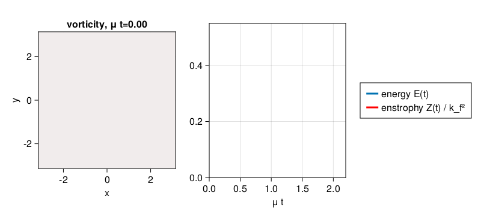

2D forced-dissipative turbulence
A simulation of forced-dissipative two-dimensional turbulence. We solve the two-dimensional vorticity equation with stochastic excitation and dissipation in the form of linear drag and hyperviscosity.
Install dependencies
First let's make sure we have all required packages installed.
using Pkg
pkg"add GeophysicalFlows, CUDA, CairoMakie"Let's begin
Let's load GeophysicalFlows.jl and some other packages we need.
using GeophysicalFlows, CUDA, Random, Printf, CairoMakie
parsevalsum = FourierFlows.parsevalsum
record = CairoMakie.record # disambiguate between CairoMakie.record and CUDA.recordChoosing a device: CPU or GPU
dev = CPU() # Device (CPU/GPU)Numerical, domain, and simulation parameters
First, we pick some numerical and physical parameters for our model.
n, L = 256, 2π # grid resolution and domain length
ν, nν = 2e-7, 2 # hyperviscosity coefficient and hyperviscosity order
μ, nμ = 1e-1, 0 # linear drag coefficient
dt = 0.005 # timestep
nsteps = 4000 # total number of steps
nsubs = 20 # number of steps between each plotForcing
We force the vorticity equation with stochastic excitation that is delta-correlated in time and while spatially homogeneously and isotropically correlated. The forcing has a spectrum with power in a ring in wavenumber space of radius $k_f$ (forcing_wavenumber) and width $δ_f$ (forcing_bandwidth), and it injects energy per unit area and per unit time equal to $\varepsilon$. That is, the forcing covariance spectrum is proportional to $\exp{[-(|\bm{k}| - k_f)^2 / (2 δ_f^2)]}$.
forcing_wavenumber = 14.0 * 2π/L # the forcing wavenumber, `k_f`, for a spectrum that is a ring in wavenumber space
forcing_bandwidth = 1.5 * 2π/L # the width of the forcing spectrum, `δ_f`
ε = 0.1 # energy input rate by the forcing
grid = TwoDGrid(dev; nx=n, Lx=L)
K = @. sqrt(grid.Krsq) # a 2D array with the total wavenumber
forcing_spectrum = @. exp(-(K - forcing_wavenumber)^2 / (2 * forcing_bandwidth^2))
@CUDA.allowscalar forcing_spectrum[grid.Krsq .== 0] .= 0 # ensure forcing has zero domain-average
ε0 = parsevalsum(forcing_spectrum .* grid.invKrsq / 2, grid) / (grid.Lx * grid.Ly)
@. forcing_spectrum *= ε/ε0 # normalize forcing to inject energy at rate εWe reset of the random number generator for reproducibility
if dev==CPU(); Random.seed!(1234); else; CUDA.seed!(1234); endNext we construct function calcF! that computes a forcing realization every timestep. First we make sure that if dev=GPU(), then CUDA.rand() function is called for random numbers uniformly distributed between 0 and 1.
random_uniform = dev==CPU() ? rand : CUDA.rand
function calcF!(Fh, sol, t, clock, vars, params, grid)
T = eltype(grid)
@. Fh = sqrt(forcing_spectrum) * cis(2π * random_uniform(T)) / sqrt(clock.dt)
return nothing
endProblem setup
We initialize a Problem by providing a set of keyword arguments. The stepper keyword defines the time-stepper to be used.
prob = TwoDNavierStokes.Problem(dev; nx=n, Lx=L, ν, nν, μ, nμ, dt, stepper="ETDRK4",
calcF=calcF!, stochastic=true)Define some shortcuts for convenience.
sol, clock, vars, params, grid = prob.sol, prob.clock, prob.vars, prob.params, prob.grid
x, y = grid.x, grid.yFirst let's see how a forcing realization looks like. Function calcF!() computes the forcing in Fourier space and saves it into variable vars.Fh, so we first need to go back to physical space.
Note that when plotting, we decorate the variable to be plotted with Array() to make sure it is brought back on the CPU when the variable lives on the GPU.
calcF!(vars.Fh, sol, 0.0, clock, vars, params, grid)
fig = Figure()
ax = Axis(fig[1, 1],
xlabel = "x",
ylabel = "y",
aspect = 1,
title = "a forcing realization",
limits = ((-L/2, L/2), (-L/2, L/2)))
heatmap!(ax, x, y, Array(irfft(vars.Fh, grid.nx));
colormap = :balance, colorrange = (-200, 200))
fig
Setting initial conditions
Our initial condition is a fluid at rest.
TwoDNavierStokes.set_ζ!(prob, device_array(dev)(zeros(grid.nx, grid.ny)))Diagnostics
Create Diagnostics; the diagnostics are aimed to probe the energy budget.
E = Diagnostic(TwoDNavierStokes.energy, prob; nsteps) # energy
Z = Diagnostic(TwoDNavierStokes.enstrophy, prob; nsteps) # enstrophy
diags = [E, Z] # a list of Diagnostics passed to `stepforward!` will be updated every timestep.Visualizing the simulation
We initialize a plot with the vorticity field and the time-series of energy and enstrophy diagnostics. To plot energy and enstrophy on the same axes we scale enstrophy with $k_f^2$.
ζ = Observable(Array(vars.ζ))
title_ζ = Observable("vorticity, μ t=" * @sprintf("%.2f", μ * clock.t))
energy = Observable(Point2f[(μ * E.t[1], E.data[1])])
enstrophy = Observable(Point2f[(μ * Z.t[1], Z.data[1] / forcing_wavenumber^2)])
fig = Figure(resolution = (800, 360))
axζ = Axis(fig[1, 1];
xlabel = "x",
ylabel = "y",
title = title_ζ,
aspect = 1,
limits = ((-L/2, L/2), (-L/2, L/2)))
ax2 = Axis(fig[1, 2],
xlabel = "μ t",
limits = ((0, 1.1 * μ * nsteps * dt), (0, 0.55)))
heatmap!(axζ, x, y, ζ;
colormap = :balance, colorrange = (-40, 40))
hE = lines!(ax2, energy; linewidth = 3)
hZ = lines!(ax2, enstrophy; linewidth = 3, color = :red)
Legend(fig[1, 3], [hE, hZ], ["energy E(t)", "enstrophy Z(t) / k_f²"])
fig
Time-stepping the Problem forward
We step the Problem forward in time.
startwalltime = time()
record(fig, "twodturb_forced.mp4", 0:round(Int, nsteps / nsubs), framerate = 18) do j
if j % (1000/nsubs) == 0
cfl = clock.dt * maximum([maximum(vars.u) / grid.dx, maximum(vars.v) / grid.dy])
log = @sprintf("step: %04d, t: %d, cfl: %.2f, E: %.4f, Z: %.4f, walltime: %.2f min",
clock.step, clock.t, cfl, E.data[E.i], Z.data[Z.i], (time()-startwalltime)/60)
println(log)
end
ζ[] = vars.ζ
energy[] = push!(energy[], Point2f(μ * E.t[E.i], E.data[E.i]))
enstrophy[] = push!(enstrophy[], Point2f(μ * Z.t[E.i], Z.data[Z.i] / forcing_wavenumber^2))
title_ζ[] = "vorticity, μ t=" * @sprintf("%.2f", μ * clock.t)
stepforward!(prob, diags, nsubs)
TwoDNavierStokes.updatevars!(prob)
endstep: 0000, t: 0, cfl: 0.00, E: 0.0000, Z: 0.0000, walltime: 0.00 min
step: 1000, t: 5, cfl: 0.40, E: 0.2971, Z: 36.2188, walltime: 0.12 min
step: 2000, t: 10, cfl: 0.49, E: 0.4138, Z: 37.5536, walltime: 0.22 min
step: 3000, t: 15, cfl: 0.45, E: 0.4564, Z: 36.3428, walltime: 0.33 min
step: 4000, t: 20, cfl: 0.55, E: 0.4775, Z: 37.3600, walltime: 0.44 min
This page was generated using Literate.jl.